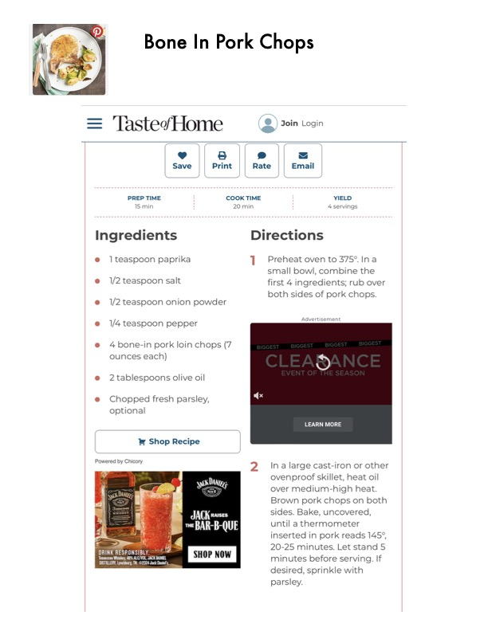

Bone In Pork Chops

Original cookbook page 643
Ingredients
- @ teaspoon paprika ] 'Preheat oven to 375:
- small bowl, combine
- . both sides of pork ct
- e@ 1/2 teaspoon onion powder
- 1/4 teaspoon pepper
- e@ 4bone-in pork loin chops (7
- ounces each) es'
- @ 2tablespoons olive oil
- @ Chopped fresh parsley,
- optional
- MCD
- I Shop Recipe
- Ronereg by oreo 2 = 'Inalarge cast-iron «
- Ren ovenproof skillet, he
- 7 Oey over medium-high
- ' Brown pork chops «
- K Ay Wires sides. Bake, uncove
- bods ILL) until a thermomete
- A inserted in pork rea
- Meee | SHOP NOW | 20-25 minutes: Net s
- oy pated minutes before ser
- tts at aR vacates
- desired, sprinkle wit
- parsley.
Instructions
- y S 2 @ Save Print Rate PREP TIME i COOK TIME YIELD 15 min ' 20 min ' 4 servings
- @ 1teaspoon paprika ] Preheat oven to 375°.
- Ina small bowl, combine the
- both sides of pork chops.
- e@ Chopped fresh parsley, optional
- ovenproof skillet, heat oil over medium-high heat.
- Brown pork chops on both sides.
- Bake, uncovered, until a thermometer inserted in pork reads 145°, 20-25 minutes.
Recipe #643 from collection